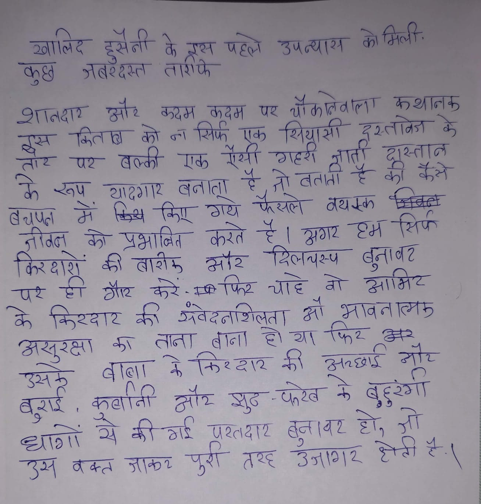

File: hin_sample_01.jpg

2016 में हरियाणा के कुछ जिलों में प्रदर्शन निष्क्रिय कर दिया।
खालिद हुसैनी के इस पहले उपन्यास को मिली. कुछ ज़बरदस्त तारीफें शानदार और कदम कदम पर चौंकानेवाला कथानक इस किताब को न सिर्फ एक सियासी दस्तावेज़ के तौर पर बल्कि एक ऐसी गहरी जाती दास्तान के रूप यादगार बनाता है जो बताती है की कैसे बचपन में किए गए फैसले व्यस्क जीवन को प्रभावित करते है। अगर हम सिर्फ किरदारों की बारीक और दिलचस्प बुनावट पर ही गौर करें – फिर चाहे वो आमित के किरदार की संवेदनशीलता औ भावनात्मक असुरक्षा का ताना बाना हो या फिर और उसके बाबा के किरदार की अच्छाई और बुराई, कुर्बानी और सुद-फरेब के बहुरंगी धागों से की गई परतदार बुनावट हो, जो उस वक्त जाकर पूरी तरह उजागर होती है।
खालिद हुसैनी के इस पहले उपन्यास को मिली. कुछ जबरदस्त तारीफें शानदार और कदम कदम पर चौकनेवाला कथानक इस किताब को न सिर्फ एक सियासी दस्तावेज के तौर पर बल्कि एक ऐसी गहरी वार्ता दास्तान के रूप यादगार बनाता है, जो बताता है की कैसे बचपन में किए गए फैसले वयस्क जीवन जीवन को प्रभावित करते हैं। अगर हम सिर्फ किरदारों की बारीकी और दिलचस्प बुनावट पर ही गौर करें-फिर चाहे वो आमिर के किरदार की संवेदनशिलता औ भावनात्मक असुरक्षा का ताना बाना हो या फिर अर उसके बाबा के किरदार की अच्छाई और बुराई, कुर्बानी और सुद-फेरेब के बुरंगी धागों से की गई परतदार बुनावट हो, जो उस वक्त जाकर पूरी तरह उजागर होती है।
HS आअहृष्चृ्ा तर कै (मीन कण हज जप अन्दर Be RH कदम पश ath ate? HAS we Raw को का Fee छडलीकित के... are ae UH एक a at Bees Soy aoe aad TA ओम] ou er ey OL Oe ae व्यय व्किकक जीदल के प्रश्न करे -ह | woe ओह “Pn ह frat की was कोश Reve Gale? = So फट केरे -सक फिड are वो Cal Gear की उपवेटलशिलता A MAA FEE का लाता बाना है। आए THe Se | wae Tal 4 Grew की gest Ae amt | aaa ATT setae के qepv erat Hol एश्दाए HT ae Bq cad Kot पुरी तर Bae SH Sh
| al M_0 _ DONS qa कै AA Weel BAA ol मिली: HY जबरदस्त aw द Sra a wre A पश dHRA DAS . = Saw को ना ns TS fot eae ar ur aH एक एड eh ant rae S eu >काहठार बलाता _ न्हैः > = नै ; Ser ay wigan बनाता : ye AL ela ‘Qer 2! Tar जे Ba किए Ser RAT वयस्क किक जी oe ये बह करें © Cl ae yore VE | frag Boats: ate Tees Gaz यह ही Ge ase फिट Te ES कि Beare की व्वेदलशिसता MAS FRE कर तोता बातो DATE कल रुके बॉल Brae की gees ate “ant. wal aie eer eee FAL HAE. BANE Ber पोती AGN | ent 4 Ato POE oe oa eS wt ne दुआ वक्त HST पुरी TE SATE TT
मिल कुछ पर मम सिरफ क ठाता के ताश + ठा२ भावनल्मझ क फि॰ तना असुश्क्षा बुहुरंगी त१
❌ OCR Failed
१९४ॢ
जालंद हुसैनी के द्ररन पटरने उपत्यारम त़ मिली कुषे त्ंबरदर्त तारांफे निफ शनदार और बदम कदज पर गौकबूवाला कथालके किताब वो ता सि्फ एक सियासी ची इर्तावेश् छे हुस्न ऐसमेा थि १ॽ दुरताब तार पर बल्की एठ गाहरो कैसे के खप यदरगार बतातू हैँ लूूटतती दरईहँ य रगा वयुपत में विंस ई किएू गाय फैखल तयम्ता रुड्डू क़ो प्रभाबित करते है।अगर रंमसिय केरघाशू की दारीए और दिलचर्प बुन्ञाबट ७ पर ही गैर करे कजफिर चाह्ट वो आंक्िय के किरदार का एवदनाशजता। गिक शं। ९ श्रावलात्मिक कु ताला बाना हिथा। फिर हिन असुरक्षा उसरू बुराई। केकिरधार क़ी उनलछार श्र बाजा बछिातीं ९ि४ ई ट ऑर सुढ-फरखे के बुहुंगा ही-रा सैकीएई परतघार बुज्ञाघर ई हो। त्ञा छॻ। रख रै बकत आकर तर६ उताठि हेटी पुर्री ह।
खालिद हुसेनी हूस बॉ के गस पल उपन्यास उप क मिली। कुछ सबरँदस्त तार्रफे शानदार मोर कदम कदम पथ चौकालेवाला रस्तावेत कथानकु के त्स किताब वो जा मिर्फ गेसी एक ग््री शियारसी ज्ञार्ता शुस्तान तोर पर बल्की बनाता ए़क़ टू टू तो बताता ह ह कॉ कैसे के एप यादगार किं्व कि गय फेसले वयक्क क्षवक् तचप्त नीवन गों वो पृभावित करते हे। मगर ट्म सिर्प किरदारों क् तारो सौर रिलचस्प बुनापर बूना आमिर बट पर ह गोर करें। कषी पितर चाहं मॉ व भावन त्मर के किरदार की संवेदनाशिलता बाना हो य। फिर कर असुरक्षा बाा कु ताना के किरदार रार की अरछाई नोर बुराई उसकू कुर्बानाी और झुठ परेब के बुहुरुर्गीं ध्ांगों रेे को गर परतदार परत थार बूना।र बन। चर हो ग्रो हे। हे। हे उ वक्त आाकर पुर्री तरह उजाशर होती ५